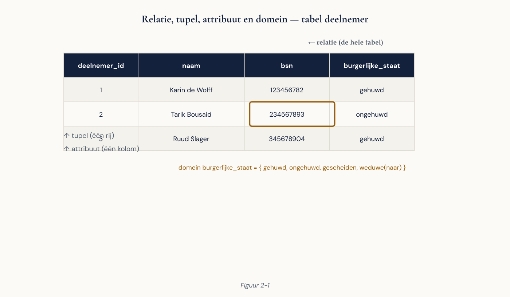
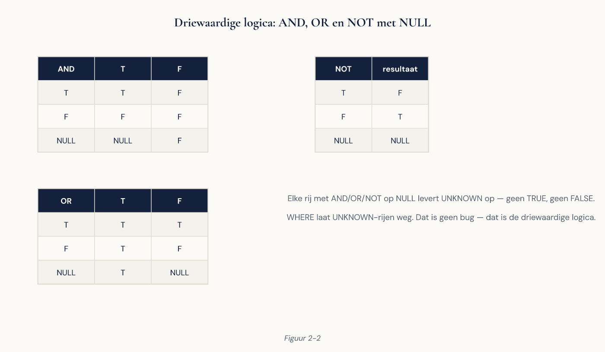
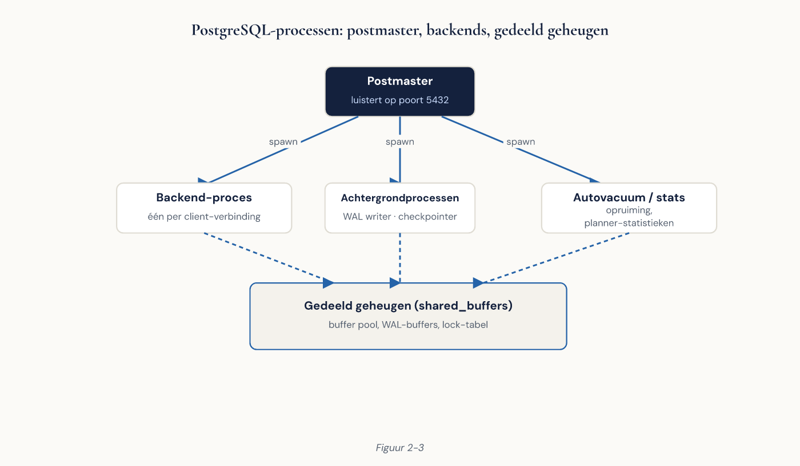
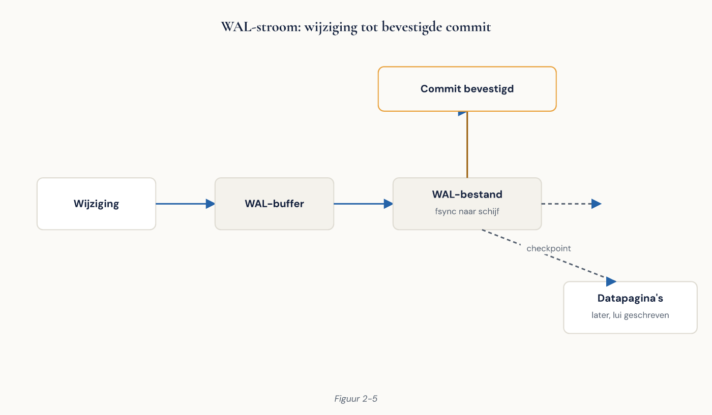

Deel 2 — Slidedeck
Het relationele model en de PostgreSQL-architectuur Niveau 1, dagdeel 2 | 42 slides
---scheidt slides. Notities: = spreektekst, niet op de slide.
Slide 1 — Titel
Het relationele model
en de PostgreSQL-architectuur
Niveau 1 — Deel 2
Wat gebeurt er tussen Enter en het antwoord?
Slide 2 — Vandaag in twee helften
Model — relatie, sleutels, integriteit, NULL
Machine — processen, geheugen, opslag, WAL, MVCC, de planner
Notities: waarschuw dat dit het zwaarste dagdeel van niveau 1 is.
Slide 3 — Leerdoelen
- Modeltermen correct gebruiken
- Sleutelkeuze motiveren
- De drie integriteitsregels toepassen
- NULL-vallen herkennen
- De PostgreSQL-processen benoemen
- Cluster / database / schema onderscheiden
- De reis van een query beschrijven
- WAL, MVCC en vacuum uitleggen
Slide 4 — 1970, dertien pagina’s
E.F. Codd — A Relational Model of Data for Large Shared Data Banks
Geen product, maar een wiskundige basis.
Bewerkingen zijn gesloten: relatie in → relatie uit.
→ Daarom mag een optimalisator je query herschrijven.
Slide 5 — De bouwstenen
| Model | SQL |
|---|---|
| Relatie | Tabel |
| Tupel | Rij |
| Attribuut | Kolom |
| Domein | Datatype + constraints |
| Cardinaliteit | Aantal rijen |
| Graad | Aantal kolommen |

Slide 6 — Het domein wordt onderschat
varchar(200) staat toe:
“Nvt” · “onbekend” · “zie mail Karin”
Bij Meridiaan: negen varianten van “gehuwd” in één kolom.
Geen schoonmaakklus.
Een ontwerpbeslissing.
Slide 7 — Sleutels
- Supersleutel — identificeert uniek (meestal veel en nutteloos)
- Kandidaatsleutel — minimaal uniek
- Primaire sleutel — de gekozen kandidaat, nooit NULL
- Alternatieve sleutel — de niet-gekozen kandidaten →
UNIQUE - Vreemde sleutel — verwijzing naar een andere tabel
Slide 8 — Natuurlijk of surrogaat?
| Natuurlijk | Surrogaat | |
|---|---|---|
| Betekenisvol | Ja | Nee |
| Stabiel | Vaak niet | Altijd |
| Altijd aanwezig | Nee | Ja |
| Privacygevoelig | Vaak | Nee |
| Extra join nodig | Nee | Ja |
Slide 9 — Het BSN-probleem bij Meridiaan
- Niet elke deelnemer heeft er een
- Bijzonder persoonsgegeven → verspreidt zich via elke foreign key
- Kan in uitzonderingsgevallen wijzigen
Cursusregel: surrogaat als primaire sleutel, natuurlijke sleutel als UNIQUE.
Notities: benoem dat dit een keuze is, niet de enige verdedigbare.
Slide 10 — Opdracht 2.1 & 2.2
2.1 Modeltermen op de tabel deelnemer — 10 min, individueel
2.2 Tarik wil overal BSN als primaire sleutel. Reageer in 120 woorden — 15 min, tweetallen
Slide 11 — Pauze
Slide 12 — Drie integriteitsregels
Entiteit — geen NULL in de primaire sleutel
Referentieel — vreemde sleutel wijst naar iets dat bestaat
Domein — waarden binnen het toegestane bereik
Slide 13 — Terug naar werkgever 8842
Deel 1: “In de SharePoint-lijst staat een mutatie op werkgeversnummer 8842. Dat nummer bestaat niet.”
Referentiële integriteit maakt dit onmogelijk.
Slide 14 — Verwijdergedrag
| Optie | Gedrag | Wanneer |
|---|---|---|
RESTRICT |
Weiger | Standaard, meestal juist |
CASCADE |
Verwijder mee | Alleen bij echt eigendom |
SET NULL |
Zet op NULL | Optionele relatie |
SET DEFAULT |
Standaardwaarde | Zelden |
Slide 15 — Waarschuwing
CASCADE verandert foutmeldingen
niet in correct gedrag,
maar in stille gegevensvernietiging.
Eén werkgever verwijderd → 800 deelnemers → al hun aanspraken.
Slide 16 — Opdracht 2.3
Verwijdergedrag kiezen
Vier situaties bij Meridiaan.
15 min, individueel
Slide 17 — NULL is niet nul
NULL = onbekend of niet van toepassing
Niet 0. Niet “”. Niet leeg.
→ Logica met drie waarden: waar, onwaar, onbekend

Slide 18 — Voorspel het resultaat
SELECT NULL = NULL;
SELECT NULL IS NULL;
SELECT 5 > NULL;
Notities: live in psql typen. Zaal hardop laten voorspellen vóór elke uitvoering.
Slide 19 — Vier vallen
WHERE x <> 100laat NULL-rijen wegAVGenCOUNT(kolom)negeren NULL —COUNT(*)nietNOT INmet NULL in de lijst → nooit rijenUNIQUEstaat meerdere NULL’s toe
Slide 20 — De oplossingen
| In plaats van | Gebruik |
|---|---|
x <> waarde |
x IS DISTINCT FROM waarde |
NOT IN (subquery) |
NOT EXISTS (...) |
COUNT(kolom) als je rijen bedoelt |
COUNT(*) |
Slide 21 — Herinner je deel 1
Drie afdelingen, drie deelnemersaantallen, alle drie verdedigbaar.
Nu weet je hoe dat gebeurt.
Slide 22 — Ontwerpregel
Gebruik NULL alleen als “onbekend of niet van toepassing” een geldige toestand is.
Nooit als verkapte statuskolom.
Slide 23 — Opdracht 2.4
NULL-vallen
Achter de machine. Voorspel eerst, voer dan uit.
20 min
Slide 24 — Relationele algebra
| Operator | SQL |
|---|---|
| Selectie σ | WHERE |
| Projectie π | SELECT-lijst |
| Vereniging ∪ | UNION |
| Verschil − | EXCEPT |
| Product × | CROSS JOIN |
| Join ⋈ | JOIN ... ON |
Slide 25 — Onthoud dit ene ding
Een join is een cartesisch product
met een filter.
340.000 × 4.100 als je de voorwaarde vergeet.
Slide 26 — Waar SQL afwijkt van het model
- Bags, geen sets → duplicaten bestaan
- Volgorde bestaat (en is niet gegarandeerd zonder
ORDER BY) - NULL en driewaardige logica
- Kolomvolgorde is betekenisvol
- Niet-atomaire waarden: arrays,
jsonb
Slide 27 — Pauze
Slide 28 — Procesmodel, geen threadmodel
Elke verbinding = een eigen OS-proces
Gevolg: robuust, maar verbindingen zijn duur.
Slide 29 — De processen
Postmaster — luistert, start backends, bewaakt Backend — één per verbinding
| Achtergrond | Taak |
|---|---|
| Background writer | Vuile pagina’s geleidelijk wegschrijven |
| Checkpointer | Checkpoints |
| WAL writer | WAL-buffers → schijf |
| Autovacuum | Dode rijversies + statistieken |
| Archiver | WAL-segmenten archiveren |

Notities: live opbouwen op het whiteboard. Vraag per proces: wat gaat er mis zonder?
Slide 30 — Geheugen
Gedeeld: shared_buffers (pagina’s van 8 kB), WAL buffers
Per backend: work_mem, maintenance_work_mem, temp_buffers

Slide 31 — De belangrijkste zin over geheugen
shared_buffers is één keer,
voor het hele cluster.
work_mem is **per bewerking,
per verbinding** — en vermenigvuldigt.
Slide 32 — Cluster ≠ meerdere machines
Cluster — één instantie, één datadirectory, één poort Database — geïsoleerde verzameling schema’s Schema — naamruimte Tabel — de gegevens
Notities: waarschuw voor het misverstand in overleg met infrastructuur.
Slide 33 — Scheiden: hoe ver?
| Niveau | Wat je houdt | Wat je verliest |
|---|---|---|
| Schema | Joins, één transactie, één back-up | Minder isolatie |
| Database | Meer isolatie | Joins, transacties over beide |
| Cluster | Volledige isolatie | Dubbel beheer |
Vuistregel: het lichtste niveau dat de eis afdekt.
Slide 34 — Het datadirectory
base/ |
De databases |
global/ |
Clusterbrede objecten |
pg_wal/ |
Write-ahead log |
postgresql.conf |
Configuratie |
pg_hba.conf |
Wie mag van waar verbinden |
Verwijder nooit met de hand iets uit base/ of pg_wal/.
Slide 35 — Opdracht 2.5 & 2.6
2.5 Architectuur zichtbaar maken — achter de machine, 20 min
2.6 Cluster, database of schema? — drietallen, 15 min
Slide 36 — WAL: het principe
- Wijziging → WAL-record
- WAL-record afgedwongen naar schijf
- Pas dan commit bevestigd
- Gegevensbestanden volgen later

Slide 37 — Waarom WAL ook sneller is
WAL = sequentieel schrijven, achter elkaar Gegevensbestanden = willekeurig verspreid over de schijf
→ Duurzaamheid tegen een fractie van de kosten
Slide 38 — MVCC
UPDATE wijzigt niets. Er komt een nieuwe versie bij.
Lezers blokkeren geen schrijvers.
Schrijvers blokkeren geen lezers.
Slide 39 — De prijs van MVCC
Dode rijversies blijven staan → iemand moet opruimen → vacuum
Autovacuum uitzetten “omdat het I/O kost”:
de bekendste manier om een
PostgreSQL-productieomgeving te slopen
Slide 40 — De reis van een query
- Parser — syntaxis → parseboom
- Analyzer/rewriter — objecten, typen, rechten, views
- Planner — welke index, welke joinvolgorde, welk algoritme
- Executor — uitvoeren, rijen terug

Slide 41 — Het inzicht van vandaag
SQL is declaratief.
Jij zegt wat. De planner bepaalt hoe.
Daarom kan dezelfde query vandaag snel zijn en morgen traag — zonder dat query, data of hardware veranderd is.
Slide 42 — Volgende keer
Deel 3 — SQL basis
SELECT, filteren, sorteren, aggregeren op de Meridiaan-database.
Vooraf: casusdatabase laden volgens de Toolbijlage.
Controle: SELECT count(*) FROM deelnemer;
Einde slidedeck deel 2.